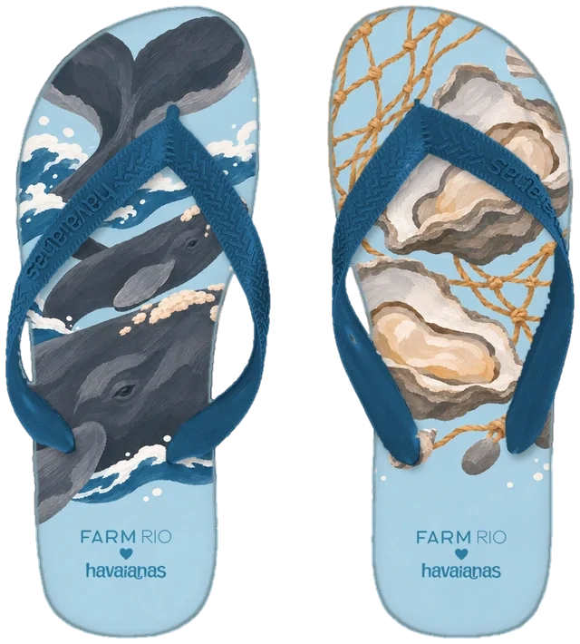
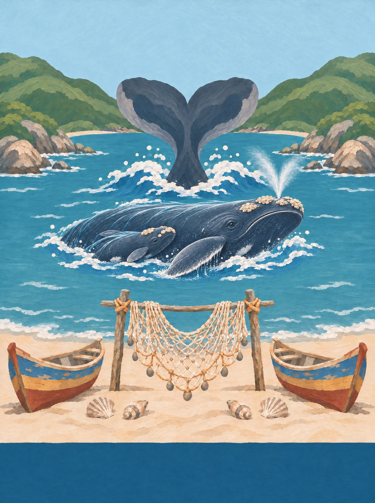
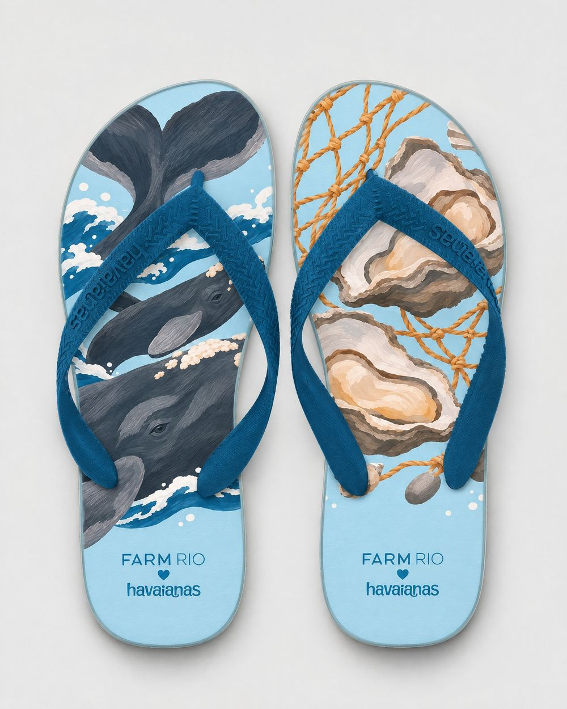
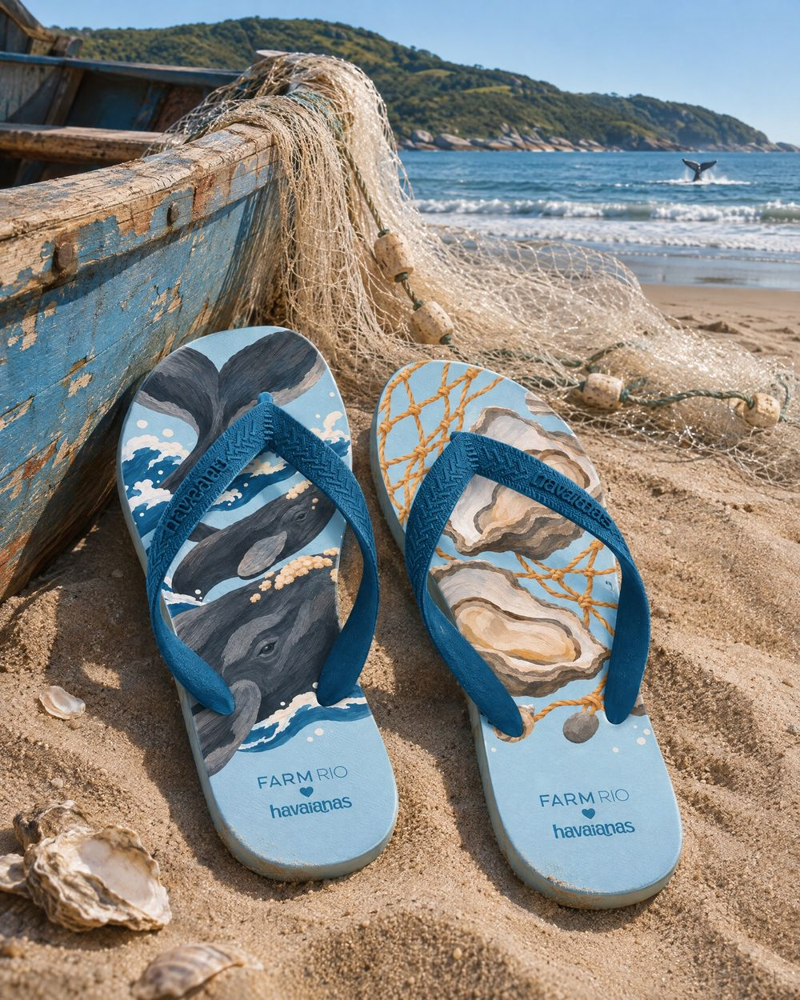
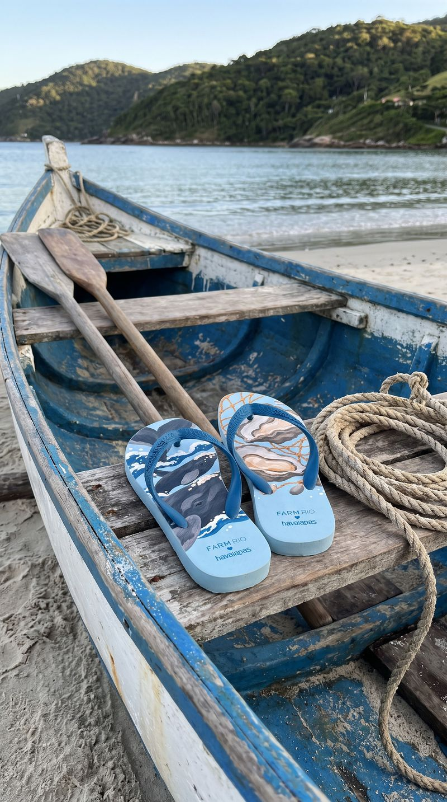
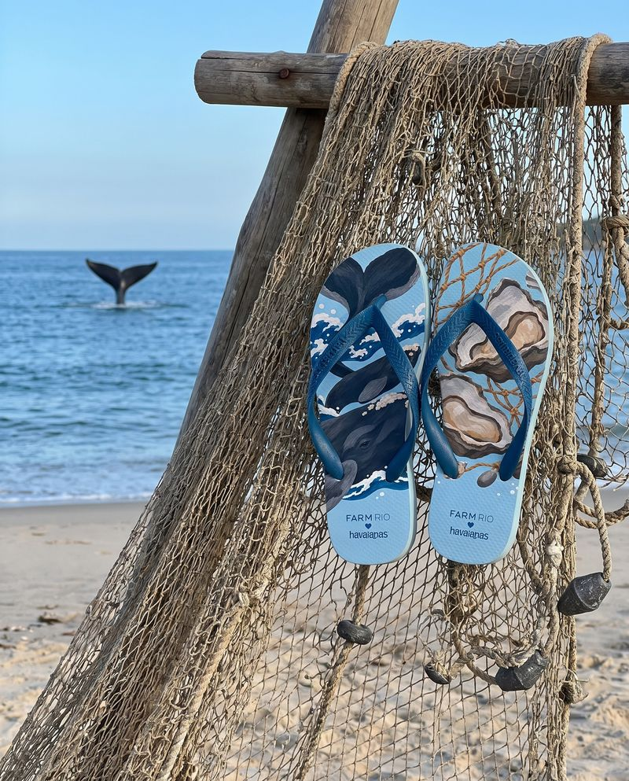

Santa Catarina
Baleia e Ostra
Todo inverno a baleia-franca volta para ter filhote no litoral de Santa Catarina; na ilha, as ostras crescem em fileiras no mar.
Garopaba já foi armação baleeira. Desde 1987 a caça é proibida no Brasil, e hoje a baleia-franca volta todo inverno para ter filhote, vista da areia. A tarrafa secando na praia é a da pesca artesanal.
13 / 14 · Sul

o coração
Encontre o coração
Ele não está desenhado em cima de nada. Aparece quando os próprios elementos da cena se encontram. Procure na ilustração e toque nele.
♥ a cauda da baleia-franca na enseada de Garopaba


o par
Dois pés, uma história
na palmilha
pé esquerdo com a baleia-franca e o filhote, a cauda levantada; pé direito com ostras abertas, um pedaço de tarrafa e conchinhas.
borracha e tira
azul açoriano das casinhas de Florianópolis; tira azul-oceano.
a arte da palmilha
Em díptico

caderno de campo
Florianópolis é ilha açoriana: casinhas coloridas de porta e janela na beira da baía, em Santo Antônio de Lisboa e no Ribeirão da Ilha, onde as ostras crescem em fileiras de boias no mar. Na Lagoa da Conceição, a rendeira cruza os bilros como aprendeu com a avó, que aprendeu com a dela, vinda dos Açores no século XVIII. No verão o boi-de-mamão dança com a Bernunça e a Maricota. A Ponte Hercílio Luz atravessa, branca, para o continente. E de julho a novembro a baleia-franca volta para ter filhote nas enseadas do sul.
trilha · a cantoria do boi-de-mamão · a ratoeira, cantiga de roda açoriana · o bilro batendo na almofada
A âncora: a baleia-franca com o filhote, que todo inverno escolhe as enseadas do litoral sul catarinense (Garopaba, Praia do Rosa, Imbituba) como berçário.
pesquisa de campo
Na rua, antes do desenho



campanha
O par no lugar


fotos de campo deste estado
.jpg){kind=link}
.jpg){kind=link}
 ← Paraná
← Paraná